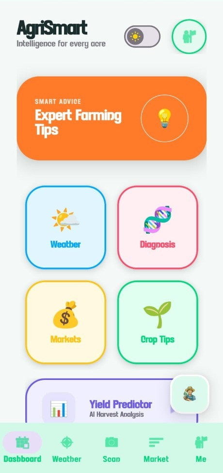
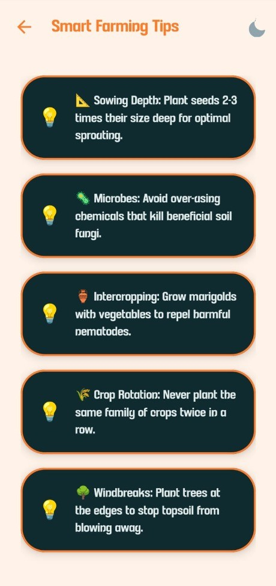

AgriSmart
Diploma Engineering Project • Govt. Polytechnic, Jalgaon
An agriculture-oriented mobile utility application engineered to empower farmers with timely agro-climatic intelligence, soil-to-crop advisory algorithms, and live APMC market commodity rates directly in the field.
- ✔ Live Agro-Weather: Real-time atmospheric metrics & localized precipitation warnings.
- ✔ Crop Recommendation Engine: Advisory logic mapping soil conditions & seasonal suitability.
- ✔ Mandi Price Feeds: APMC commodity rates for transparent pricing insights.
- ✔ Farmer Utility Suite: High-contrast interface designed for outdoor sunlight readability.


